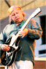

Джон Ли Хукер вынужден был отменить свои европейские гастроли нынешним летом из-за осложнений со здоровьем. Возможность операции на сосудистой системе все еще рассматривается. Однако на настоящий момент по-прежнему подтверждается его концерт 24 июня в Атланте.
National Heritage Fellowships (что-то вроде "степендиат национального наследия") - звание, присваиваемое Национальным фондом искусств США (National Endowment for the Arts)- является высшим национальным признанием для артиста. В 2000 году этой почести удостоились патриарх блюзового фортепиано Пайнтоп Перкинс и основатель знаменитой в 60-х блюзовой фирмы Arhoolie Records Крис Стрэчвитц.
В начале второй декады июня проходит бесплатный чикагский блюз-фестиваль. Одним из гвоздей программы нынешнего года является "Миссиссиппский клуб избранного общества". Под этим названием объявлен концерт трех музыкантов, игравших с легендарным Робертом Джонсоном: гитарист Хоумсик Джеймс (91 год), гитарист и пианист Генри Таунсенд (90 лет) и гитарист Дэвид "Медовый" Эдвардз (84 года).
Харпист Уилли Коббз (автор неувядающей "Ты меня не любишь", которую записывали Джуниор Уэллс, "Олман Бразерз", Джон Хэммонд, Джон Мэйэлл и многие-многие другие), 20 июня выпускает сольный альбом "Jukin'" на фирме "Bullseye". Rounder Records продолжает выпуск записей, сделанных этнологом, музыковедом и блюзолюбом Аланом Ломаксом "в полевых условиях". Альбом, запланированный к выпуску 13 июня, называется "Deep River of Songs" - "Глубокая река песен".
В прошлом выпуске новостей говорилось о книге Н.Коходас "Spinning Blues Into Gold". У книги есть свой сайт, где можно ознакомиться с фрагментами.
{kind=link}